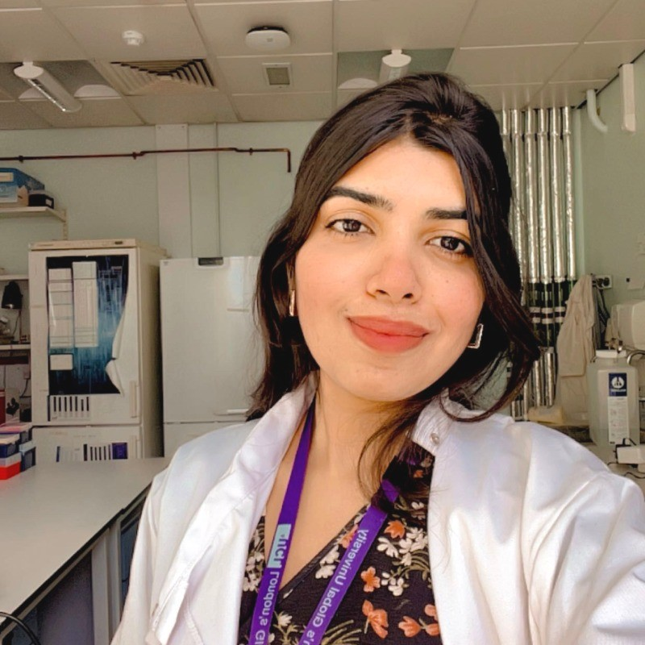

I built a drug screening platform that tests any CFTR mutation against any candidate drug. It measures channel function, membrane proximity and intracellular pH at once, in living cells. It's now being used to inform treatment decisions for real patients.

Ion-channel physiology, fluorescence imaging and drug discovery.
My platform is used on patient-derived cells at Institut Necker-Enfants Malades, Paris, with Prof. Isabelle Sermet-Gaudelus. It helps guide real treatment decisions for people with rare CFTR mutations and recurrent pancreatitis.
HTA trained · Human tissue governance & informed consent · GLP · GMP awareness · BSL-2 · Laboratory Animal Science & Handling (accredited) · Version-controlled SOPs · Audit & inspection support · ELN & data integrity · Method validation to defined acceptance criteria
Elected to represent every postgraduate researcher in the Faculty of Life Sciences, one of UCL's eleven faculties.
“Stay curious, be persistent and don't underestimate the power you have.”
Interviewed as a CF Trust-funded early career researcher for International Day of Women and Girls in Science, 2025, by Rosie, a young person living with CF. My words became the headline. Read the interview →
Each has its own collaborators and deliverables. I ran all five at once, over three years (with 317 days of microscope downtime).
Click any card below to turn it over.
CFTR carries chloride and bicarbonate. Current modulator drugs were optimised for chloride, and there is evidence they leave bicarbonate flow unrestored, which is what controls mucus fluidity and the antimicrobial defence of the airways.
I hold Project One of the CF Bicarbonate Centre: developing high-content fluorescence assays to rapidly monitor CFTR-mediated bicarbonate flow, and to ask how mutations and modulator drugs affect it. One 96-well assay reads channel function, membrane proximity and intracellular pH in the same living cells.
Taken from concept through optimisation and formal validation (Z′-factor, SSMD, signal-to-background) to a method used across four institutions in three countries. Funded by the CF Trust and the CF Foundation.
Applying the platform to patient-derived cells so that clinicians can choose a therapy for patients carrying rare CFTR mutations, including those with recurrent pancreatitis.
This runs directly with clinicians at Institut Necker-Enfants Malades, so what I find in the lab feeds into a decision about a specific person's treatment.
It's the part of my work I care about most.
Showed by high-content functional assay that the BK channel activator GoSlo-SR-5-6 acts as a direct CFTR potentiator, rather than working indirectly as assumed.
It also synergises with ETI (elexacaftor/tezacaftor/ivacaftor) to increase anion transport in both wild-type and mutant CFTR. That could matter for patients who respond poorly to current modulator therapy.
Validated by patch-clamp electrophysiology.
Synthetic ion transporters can carry chloride across a membrane and bypass CFTR entirely. The problem is that they are hydrophobic, so getting them into cells is the bottleneck.
We engineer liposomal nanocarriers of differing surface charge and lipid composition and ask how they interact with two structurally distinct anion transporters, a flexible urea-alkyl derivative and a rigid bis-trifluorophenyl squaramide. Formulations characterised by size and zeta potential, potency measured by vesicle chloride-efflux EC50 and in HEK293 cells expressing halide-sensitive YFP.
Transporter structure and formulation act together to set delivery efficiency: negatively charged and zwitterionic POPC carriers give the lowest EC50 values. A quantitative framework for rational design of ionophore therapeutics.
Built automated image-segmentation and scoring pipelines in Python, MATLAB and GraphPad with UCL Computer Science and Advanced Research Computing.
Throughput went up by around 50% and analysis time down by around 40%. More importantly, scoring stopped depending on who was doing it.
Three years, one microscope, 317 days lost to downtime.
A Molecular Devices ImageXpress high-content confocal that nobody in the department could reliably run, and a PhD that depended entirely on it.
The microscope was out of action for 317 days. With no technician and no engineer available, I learned to diagnose it myself and took over the vendor relationship, leading site visits, presenting findings to Molecular Devices field engineers and escalating to account managers and department heads until it was fixed.
Through all of it I completed my PhD data generation on schedule, while building the CFTR platform, running five projects at once and training 11 students.
Technicians, PIs, researchers and students now bring their ImageXpress questions to me rather than to the vendor. Before I leave, I am training the three technicians who will support it.
“The world expert on the ImageXpress.”
How my PI describes me, in writing. Others across the institute say the same.Six problems from my PhD: what was wrong, how I worked out why, and what it took to fix.
The high-content confocal my entire project ran on failed. There was no technician support, no engineer available, and nobody in the department able to drive the system well enough to say what had gone wrong.
Learned the instrument from nothing and diagnosed the fault myself, then ran the vendor relationship: organised and led site visits, presented findings to Molecular Devices field engineers, tested proposed fixes and escalated to account managers and department heads until it was resolved.
Instrument restored and PhD data generation completed on schedule. I am now the institute's technical point of contact for the platform and am training the three technicians who will support it after I leave.
The assay reads CFTR anion flux on YFP and cytosolic pH on pHuji in the same cell. pHuji stayed essentially flat. Three explanations fitted the data equally well and each demands a different response: the reporter was not working, the HEK293 cells were regulating pH too tightly for the change to be visible, or there was genuinely no pH change to see.
Tested them rather than assuming. First I calibrated both fluorophores directly: β-escin permeabilisation across pH 5 to 11, fitting the fluorescence–pH relation with the Hill equation for pHuji and YFP from the same dataset. Both gave clean, well-fitted curves, so the reporters were sound. I then challenged the cells' own pH-regulatory machinery with pH-regulatory inhibitors, and the pH changes appeared.
The flat trace was real biology, not a failed experiment: HEK293 cells hold cytosolic pH near 7.0–7.4 through NHE1 proton extrusion and V-ATPase buffering. That result validated YFP quenching as a genuinely pH-independent measure of CFTR anion transport, which is the control the whole platform rests on, and inhibiting those pathways now unmasks bicarbonate-driven pH change.
Cell lines failing across the lab, sometimes students' and sometimes my own. A lost line costs weeks, and in a shared facility that loss lands on everyone using it at once.
Worked out how to recover cultures that had been written off and bring them back to healthy growth, and built the handling and stock discipline that stopped it recurring, alongside running lab operations, procurement and instrument upkeep for the group.
I became the person the department comes to for cells, supplying recovered lines to other labs, including to PIs and senior researchers, when their own stocks failed.
In the default configuration YFP is collected through a 542–582 nm emission filter and pHuji (Ex 561 nm, Em 570–630 nm) through Texas Red. pHuji's emission overlaps the standard YFP window, so pHuji bleeds into the YFP channel and the two readouts stop being independent, which is the entire point of the assay.
Specified a custom, narrower Semrock 540/15 nm YFP emission filter (FF01-540/15-25), which gave sharp separation and eliminated pHuji bleed-through. That introduced a second artefact: with the 520 nm excitation laser sitting close to a 15 nm-wide window, a bright band appeared across the field. Other lasers cost too much signal and other filters brought the bleed-through back, so instead of changing hardware I used digital confocal to suppress the stray contribution and even out the field.
Clean simultaneous detection of anion flux and cytosolic pH in the same cells, with signal intact. That filter configuration is now part of the standard imaging protocol for the platform.
The protocol needs three timed automated additions during a single live-cell run: activator, then iodide to drive quenching, then NH₄Cl to dissipate the pH gradient for normalisation. High-content systems support two. UCL technicians and scientists across Europe, including the manufacturer's own applications teams, could not solve it.
Escalated beyond Europe to the manufacturer's senior specialist in the US and worked the problem through with them. We built a reservoir configuration that reuses a second source plate for the second and third additions, with the third separated out as a mapped addition.
Three automated additions on a two-addition instrument, with no hardware modification. It made the full acquisition protocol possible, and I have since set it up for other groups at UCL who needed the same thing.
The analysis segments every cell in every well across a full time course and extracts per-cell fluorescence traces on two channels. Run locally it saturated the machine, and processing time became the limit on how many conditions I could screen. I was also building the pipeline myself, without a computational background to fall back on.
Worked with UCL Advanced Research Computing to move the analysis onto UCL's high-performance computing research clusters, so jobs ran off the local systems entirely. Debugged the pipeline step by step and went directly to academics across several UCL departments, including Computer Science, for the parts I could not solve alone rather than working around them.
An automated segmentation and scoring pipeline that runs at cluster scale: throughput up by around 50% and analysis time down by around 40%, with scoring no longer dependent on who performed it. I learned Python and MATLAB to build it.
Eight international conferences, four countries, 2023 to 2026.
Eleven researchers trained one-to-one, plus 300+ students taught across courses.
Immunology, molecular biology and biomedical research across four Indian institutes, 2017 to 2023.
Final-year research in the immunology laboratory of the Director of IISER Thiruvananthapuram.
Characterised the biochemical impact of STUB1 disease variants via protein interaction assays and Western blotting, and identified a novel CARP2-mediated regulatory axis relevant to neurodegenerative disease penetrance.
Designed and interpreted the experiments independently.
Core protein and molecular work: plasmid purification, gel electrophoresis, Western blotting and FPLC protein purification.
This is where the discipline came from that everything else rests on: clean preparations, proper controls, and results that hold up when someone repeats them.
Research internship at SCTIMST, an Institute of National Importance in Thiruvananthapuram specialising in biomedical technology and medical sciences.
Project details to be added.
Research internship at CCMB Hyderabad, one of India's premier CSIR laboratories for cellular and molecular biology research.
Project details to be added.
Research internship at IISER Thiruvananthapuram, where I went on to complete my Integrated Master's with a GPA of 9.0/10.
Project details to be added.
Research internship at Mediciti Institute of Medical Sciences and Hospital, Hyderabad. My first exposure to a clinical and hospital research environment.
Project details to be added.
Available from September 2026. Open to collaborations, research partnerships and industry roles.